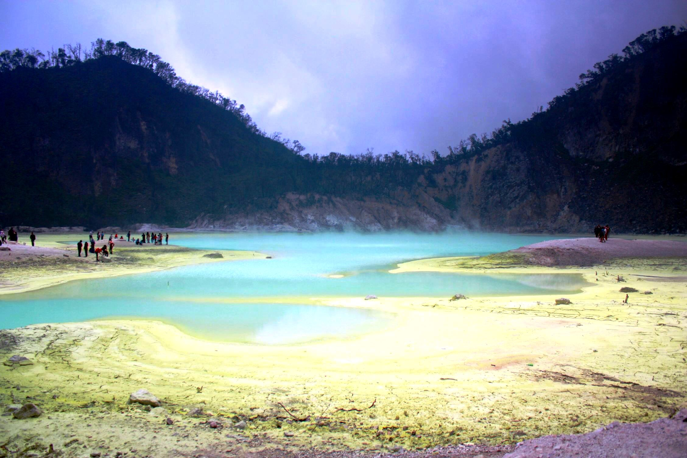
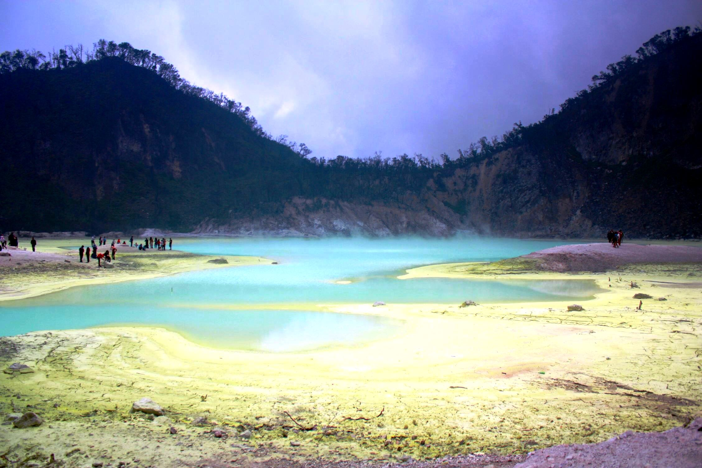

Kawah Putih is located near the charming little market town of Ciwidey, approximately 50 Kilometers south of Bandung. The Crater Lake is one of two craters of Mount Patuha, with the dry Kawah Patuha or the Patuha Crater located 600 meters to its northwest, being the other. Stepping into Kawah Putih is like entering a different realm.
As the name suggests, the Crater Lake and its surroundings are dominated by a pale white color which radiates a rather hypnotizing ambience. The vast dormant volcanic crater is filled with surreal turquoise-colored water. The tree-clad cliffs surrounding the crater reach around 2,500 meters above sea level and make for a stunning backdrop, especially when the clouds start to roll in. The altitude here brings with it chilly temperatures, which in a way, will add to the magical splendor of Kawah Putih.
In World War II the plant was taken over by the Japanese military and was operated under the name Kawah Putih Kenzanka Yokoya Ciwidey. Today the plant no longer exists , however, entry points to its tunnels, remnants of these mining activities can still be seen at several points around the current site. First opened for visitors in 1987, nowadays Kawah Putih is a favorite destination for tourists and day trippers who are simply stunned by its mesmerizing ambience. On weekends and on holidays, quite large numbers of visitors frequently visit the area just to immerse themselves in the mystical beauty of nature.

 
